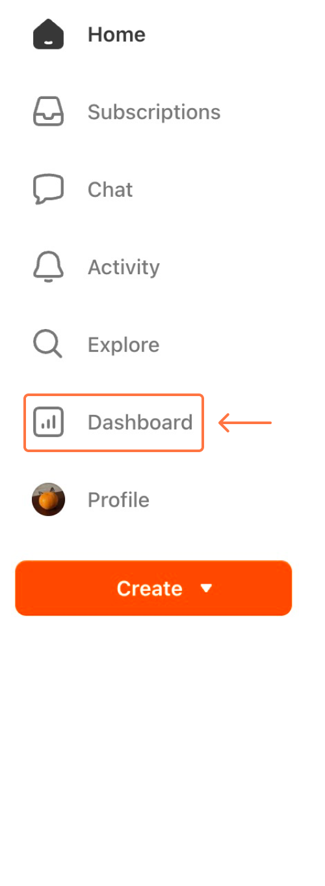
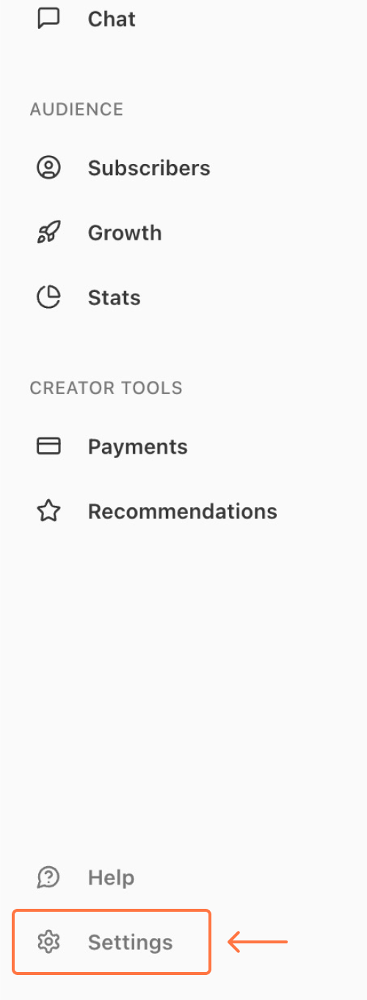
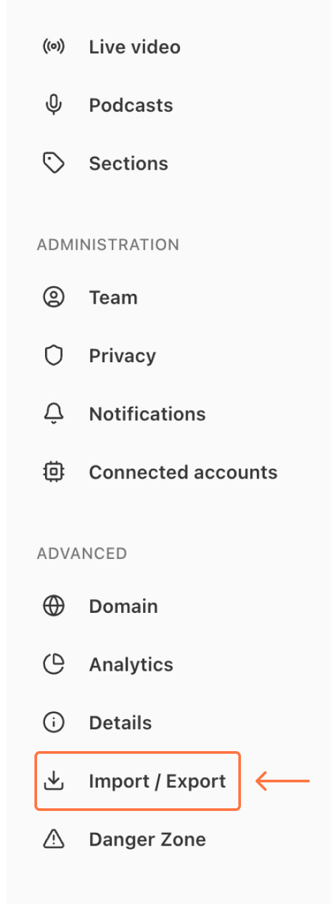
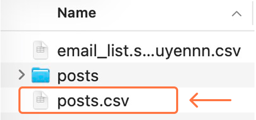

Import your posts to enable internal linking (by typing "[[").
Follow these steps to get your posts.csv file from Substack.
1. Go to your Dashboard

2. Click Settings

3. Go to Import / Export

4. Download & unzip, then find posts.csv in the export
